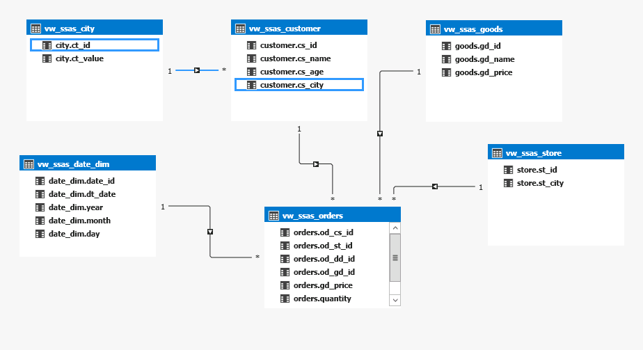
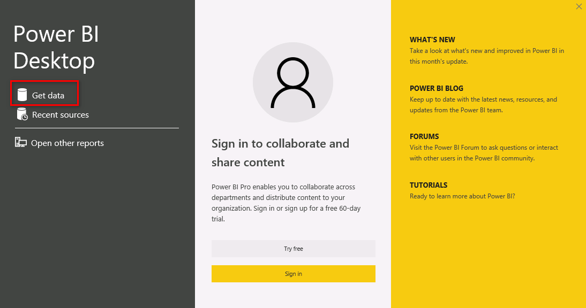
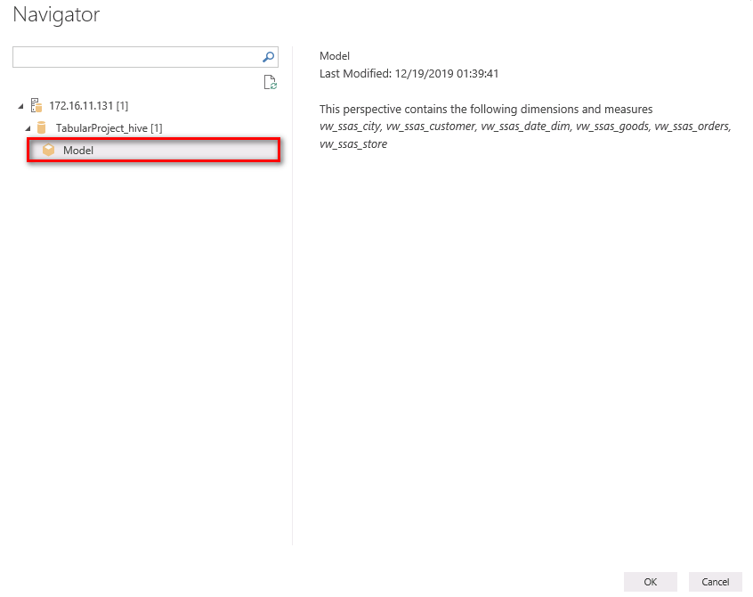
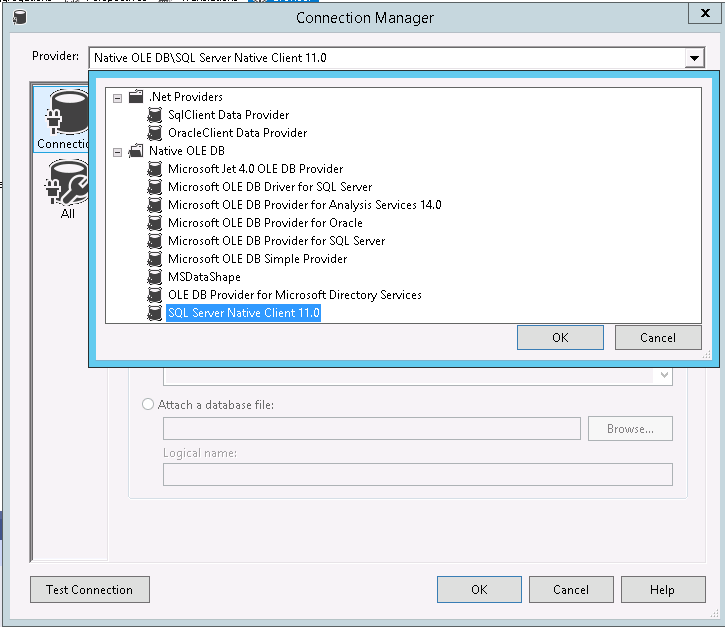
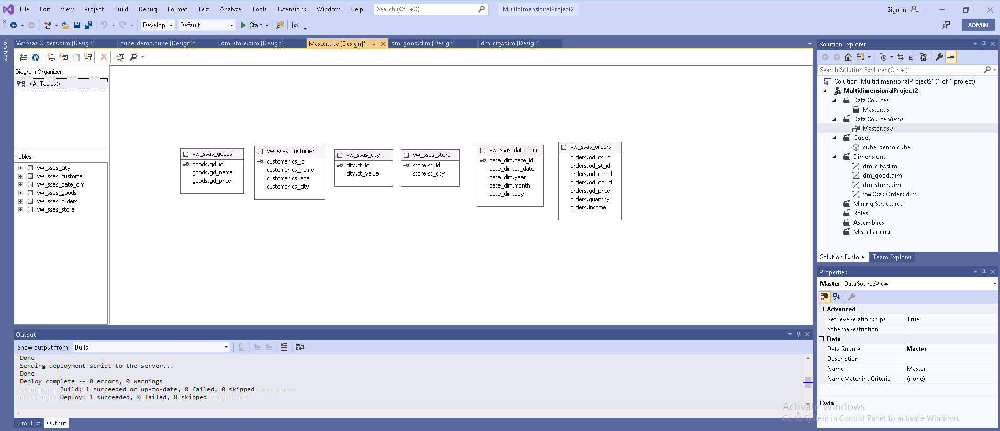

SQL Server Analysis Services 对接 FusionInsight HD¶
适用场景¶
SSAS 2017 ↔ FusionInsight HD 6.5 (Hive/Spark)
概述¶
-
SQL Server Analysis Service (SSAS) 是微软旗下的数据分析引擎，提供企业级的语义数据模型，用于支撑报表分析和商业决策。
SSAS 常用的两种模型为表格模型和多维模型，使用表格模型时，可以通过ODBC驱动直接对接Hive数据源，如果是多维模型，需要通过SQL Server链接服务器作转换后，才能对接Hive数据源，详细对接过程参考后续功能验证过程。
准备工作¶
软件安装¶
-
提前安装以下软件用于SSAS测试验证：
-
visual studio 2019，需要安装 Microsoft Analysis Services Projects 扩展包以及data storage and processing 工具包。
-
Power BI Desktop，用于调用SSAS数据源，进行数据展现。
-
SSMS, 用于SQL Server和SSAS数据库管理。
-
SQL Server 2017，需要创建两个实例，分别支持运行表格模型和多维模型的SSAS。
-
SSAS 2017，创建两个实例，分别运行表格模型模式和多维模型模式。
数据源驱动准备¶
-
下载和安装32bit 和64 bit的Microsoft ODBC驱动:
配置Kerberos认证¶
-
下载和安装MIT Kerberos认证客户端: 点击下载
-
配置Kerberos认证过程：
-
下载并安装MIT Kerberos。请记住安装路径，例如：“C:\Program Files\MIT\Kerberos”。
-
参考FusionInsight HD 6.5 文档，“应用开发指南->安全模式->安全认证”配置对接账号及相关权限。
-
使用对接账号登录FusionInsight管理界面，鼠标停留在右上角显示用户处，在下拉显示框中选择“下载用户凭据”，选择集群并确认下载，下载解压后包括krb5.conf和user.keytab两个文件。
-
重命名krb5.conf文件为krb5.ini，并拷贝到“C:\ProgramData\MIT\Kerberos5”目录下。“C:\ProgramData”目录一般是隐藏的，需要设置显示隐藏文件。
-
设置Kerberos票据的缓存文件。创建存放票据的目录，例如“C:\temp”。
-
设置Windows的系统环境变量，变量名为“KRB5CCNAME”，变量值为“C:\temp\krb5cache”。设置Windows的系统环境变量，变量名为“KRB5_CONFIG”，变量值为“C:\ProgramData\MIT\Kerberos5\krb5.ini”,重启服务器。
-
在Windows上进行认证。打开MIT Kerberos，单击“get Ticket”，在弹出的“MIT Kerberos: Get Ticket”窗口中，“Pricipal”输入用户名，“Password”输入密码，单击“OK”。
-
配置Spark ODBC DSN¶
-
打开Windows ODBC配置工具，在 System DSN 中，分别配置 Sample Microsoft Hive DSN 和 Sample Microsoft Spark DSN ，相关配置参考下图，根据实际环境替换HOST地址。
Data Source Name: Sample Microsoft Spark DSN Spark Serve Type: SparkThriftServer(Spark1.1 and later) Host(s): 172.16.11.22，Spark2x的JDBCServer2x主节点 Port：22550 Database: default Mechanism：Kerberos Host FQDN：hadoop.hadoop.com Service Name：spark2x Realm：留空 Thrift Transport: SASL
参考配置：

在 SSL OPTIONS 中取消勾选SSL校验，设置如下图：

配置HIVE ODBC DSN¶
-
HIVE DSN 配置参考选项如下，根据实际环境替换HOST地址
参考配置如下图：Data Source Name: Sample Microsoft Hive DSN Host(s): 172.16.11.21，Hive Service主节点 Port：21066，Hive Service端口 Database: default Mechanism：Kerberos Host FQDN：hadoop.hadoop.com Service Name：hive Realm：留空 Thrift Transport: SASL SSL Options: 取消勾选“Enable SSL”

功能验证一：创建表格模型¶
验证使用Hive数据源创建一个SSAS表格模型。
准备测试数据。¶
-
在beeline模式下执行以下命令，创建测试表及相关数据。
create database ssas; create table city(ct_id string,ct_value string); insert into city values('sz', 'shenzhen'); insert into city values('bj', 'beijing'); insert into city values('sh', 'shanghai'); create table customer(cs_id string, cs_name string, cs_age int, cs_city string); insert into customer values('1','tk', 32, 'sz'); insert into customer values('2','ht', 18, 'bj'); insert into customer values('3','zhh', 21, 'sh'); insert into customer values('4','hhx', 22, 'sz'); create table store(st_id string, st_city string); insert into store values('store1', 'sz'); insert into store values('store2', 'bj'); insert into store values('store3', 'sh'); create table goods(gd_id string, gd_name string, gd_price int); insert into goods values('bd','bread',10); insert into goods values('mk','milk',6); create table date_dim(date_id string,dt_date date,year int,month int,day int); insert into date_dim values('2010','20101001',2010,10,1); insert into date_dim values('2011','20110501',2011,5,1); create table orders(od_cs_id string,od_st_id string, od_dd_id string,od_gd_id string, gd_price int,quantity int, income int); insert into orders values('1','store1','2010','bd',10,30,300); insert into orders values('2','store2','2011','mk',6,5,30); insert into orders values('3','store3','2010','mk',6,10,60); insert into orders values('3','store3','2011','bd',10,3,30); insert into orders values('2','store2','2010','mk',6,30,180); insert into orders values('1','store1','2011','bd',10,20,200);
创建Project¶
- 打开visual studio 工具，File->new-> Project-> Analysis services tabular project，点击 next ,设置项目名称，选择框架为 .NET Framework 4.7.2，点击 create, 选择 Integrated workspace"，兼容模式设置为 SQL Server 2017/ Azure Analysis Services(1400), 点击 OK 完成项目创建。
添加数据¶
-
在右侧Tabular Model Explorer 中，右键 DATA SOURCE -> New DataSource -> ODBC -> 点击 Connect.
-
新的弹出窗口中，选择DSN，比如配置的 Sample Microsoft Hive DSN， 点击 Ok 。
-
选择 windows -> impersonation mode 为 impersonate service account，点击 Connect 。
导入表格¶
-
右键 SQL数据源，选择 import new tables，勾选创建的所有视图，点击 load 加载数据，执行成功后如下图：

创建模型¶
-
创建模型的实体关联关系，如下图：

点击工具栏 启动，完成模型创建和部署，模型创建完成后如下图：

报表分析¶
-
使用Power BI Desktop 加载ssas模型并进行报表展示
- 打开Power BI Desktop软件，选择 Get Data，选择 SQL Server Analysis Service Database，点击 Connect,

输入 SSAS database server信息，Database可以不填，连接方式使用 Connect Live 方式，点击 OK 进入下一步。

选择对应的模型，并点击 OK 进入下一步，模型将被导入，模型中的表及字段信息将在右侧Fields模块中显示。

- 设计报表，本案例中设计一个直方图，展示各城市面包和牛奶的销售情况：

右键图表，选择 show data，可以查看详细数据，如下图：

- Power BI Desktop 能够正确读取SSAS模型数据并报表呈现，验证完成。
功能验证二：创建多维模型数据源视图¶
-
由于Microsoft Visual Studo多维模型数据源以支持Microsoft OLE DB为主，并不支持ODBC，所以对接Hive数据源时，直接使用Microsoft Hive/Spark ODBC是无法对接使用的。需要在SQL Server 服务器中，将Hive/Spark 添加为外部链接服务器，驱动选用 Microsoft OLEDB Provider for ODBC Driver，同时在SQL Server中创建视图来调用Hive表。这种方式间接的通过SQL Server做一个转换，实现对Hive数据源的访问 。
下图为多维数据模型支持的数据源驱动列表，不支持ODBC类型驱动。

多维模型建模涉及的工具及流程参考如下图：

Microsoft官方SSAS对接Hive/Spark最佳实践: 点击查看
准备测试数据。¶
-
在beeline模式下执行以下命令，创建测试表及相关数据。
create database ssas; create table city(ct_id string,ct_value string); insert into city values('sz', 'shenzhen'); insert into city values('bj', 'beijing'); insert into city values('sh', 'shanghai'); create table customer(cs_id string, cs_name string, cs_age int, cs_city string); insert into customer values('1','tk', 32, 'sz'); insert into customer values('2','ht', 18, 'bj'); insert into customer values('3','zhh', 21, 'sh'); insert into customer values('4','hhx', 22, 'sz'); create table store(st_id string, st_city string); insert into store values('store1', 'sz'); insert into store values('store2', 'bj'); insert into store values('store3', 'sh'); create table goods(gd_id string, gd_name string, gd_price int); insert into goods values('bd','bread',10); insert into goods values('mk','milk',6); create table date_dim(date_id string,dt_date date,year int,month int,day int); insert into date_dim values('2010','20101001',2010,10,1); insert into date_dim values('2011','20110501',2011,5,1); create table orders(od_cs_id string,od_st_id string, od_dd_id string,od_gd_id string, gd_price int,quantity int, income int); insert into orders values('1','store1','2010','bd',10,30,300); insert into orders values('2','store2','2011','mk',6,5,30); insert into orders values('3','store3','2010','mk',6,10,60); insert into orders values('3','store3','2011','bd',10,3,30); insert into orders values('2','store2','2010','mk',6,30,180); insert into orders values('1','store1','2011','bd',10,20,200);
创建 linked server¶
-
在SQL SERVER 数据库中链接数据库
-
打开SQL Server Management Studio, 选择 file->object Explorer，选择 database engine,连接本机已经安装完成的SQL Server。
-
左侧资源栏中，右键 server objects->Linked Servers，选择 New Linked Server，输入链接服务器的连接信息，点击 OK 完成配置。
Linked Server: HIVELINK ,可自定义 Provider: Microsoft OLEDB Provider for ODBC Driver Data Source: Sample Microsoft Hive DSN #如果是Spark,则此处替换为Spark的DSN,如Sample Microsoft Spark DSN 其它可留空
配置参考如下图：

-
创建视图¶
-
在SSMS中，打开一个SQL查询窗口，分别执行以下每条语句，创建Hive表对应的视图：
create view vw_ssas_city AS SELECT * FROM OPENQUERY(HIVELINK,'SELECT * FROM ssas.city;') create view vw_ssas_customer AS SELECT * FROM OPENQUERY(HIVELINK,'SELECT * FROM ssas.customer;') create view vw_ssas_date_dim AS SELECT * FROM OPENQUERY(HIVELINK,'SELECT * FROM ssas.date_dim;') create view vw_ssas_goods AS SELECT * FROM OPENQUERY(HIVELINK,'SELECT * FROM ssas.goods;') create view vw_ssas_orders AS SELECT * FROM OPENQUERY(HIVELINK,'SELECT * FROM ssas.orders;') create view vw_ssas_store AS SELECT * FROM OPENQUERY(HIVELINK,'SELECT * FROM ssas.store;') create view vw_ssas_store AS SELECT * FROM OPENQUERY(HIVELINK,'SELECT * FROM ssas.store;')
创建Project¶
- 打开visual studio 工具，File->new-> Project-> Analysis Services Multidimensional and Data Mining Project，点击 next ,设置项目名称，点击 create, 完成项目创建。
导入数据用于建模¶
-
在右侧 Solution Explorer 中，右键 Data Sources -> New Data Source ，点击 NEXT, 选择 Create a data source based on an existing or a new connection ,点击 new, 设置数据库连接。
-
Connection Manager 窗口中，选择或者输入 Server Name 的IP或者域名，Database 选择 master(创建的视图所在的DB)，点击 next 进入下一步。
-
Impersonate Information 页面中，可以选择 use service as an account, 设置database 名称，点击 Finish 完成配置。
-
右侧 Solution Explorer中，右键 Data Source Views ，选择 New Data Source View, 点击 Next, 下一页面保持默认，点击 Next 。
-
Select Tables and Views 页面中，选择需要包含的视图，添加到右侧 included Objects 中，点击 next 进入下一步，点击 Finish 完成设置。
如下图所示，此时数据源视图已经成功获取Hive数据源中的相关表格数据信息。
